📈 Lesson 3.1: Line, Scatter and Bar Charts
Turn the tables you built in Module 2 into pictures: learn how Matplotlib is put together, draw the four charts that answer most questions, and learn to pick the one that fits the question you are asking.
🎯 Learning Objectives
By the end of this lesson, you will be able to:
- Explain what a Figure and an Axes are, and build any chart with
fig, ax = plt.subplots()and methods onax - Draw a line chart, a scatter plot, a bar chart and a histogram from a pandas DataFrame, with a title and labeled axes
- Choose a chart type from the question being asked (change over time, relationship, comparison, distribution)
- Plot straight from a DataFrame with
.plot(ax=ax)and say what pandas is doing for you - Recognize charts that are drawn without error but show the wrong thing, and fix them
In This Lesson
💬 A Chart Is an Answer
In Module 2 you learned to reshape Pinecrest's data until a table held exactly the numbers you wanted. A table of 24 monthly totals is correct, and almost nobody can see the pattern in it. Draw the same 24 numbers as a line and the seasons, the growth and the odd month out are visible in a second. Your eyes are very good at shapes and very slow at columns of digits. This module is about using that.
💡 Mental Model: Question First, Chart Second
A chart is not a decoration for a report. It is an answer to a question, and the kind of question picks the kind of chart. "How did it change over time?" is a line. "Do these two things move together?" is a scatter of dots. "Which group is bigger?" is a set of bars. "What values are typical, and how spread out are they?" is a histogram. Think of them as four tools on a bench: you do not start by picking up the saw, you start by looking at what needs cutting.
So every chart in this lesson starts with a question about Pinecrest Outfitters, written down in words, before any plotting code. Keep that habit and most "which chart should I use?" decisions make themselves.
🤔 Why Matplotlib?
Matplotlib is the foundation of plotting in Python. pandas draws its charts with it. seaborn, which you will meet in Module 7, is built on top of it. When one of those tools gives you a chart that is almost right, the fix is nearly always a line of Matplotlib. Learn how it is organized once, here, and every later plotting tool becomes easier.
🧱 Figure and Axes
Matplotlib has two nouns you must know. Everything else hangs off them.
- A Figure is the whole picture: the sheet of paper. It has a size in inches and it is what gets saved to a file.
- An Axes is one chart drawn on that sheet: the plotting area with its x axis, its y axis, a title, and the lines, dots or bars inside it. A Figure can hold one Axes or many (Lesson 3.2).
⚠️ Axes Is Not the Plural of Axis
The naming is unfortunate, and it confuses everyone once. An Axes (with an "e") is a whole chart. An axis (with an "i") is one of the number lines along its edge. One Axes has two axis objects: ax.xaxis and ax.yaxis.
Your First Chart, the Way This Course Draws Them
Open a new notebook in your project folder. The Boise store's revenue for the first week of January 2024 is a good first thing to draw, because you have met these seven numbers before.
import matplotlib.pyplot as plt
import numpy as np
import pandas as pd
pd.set_option("display.width", 150)
pd.set_option("display.max_columns", 20)
days = ["Mon", "Tue", "Wed", "Thu", "Fri", "Sat", "Sun"]
week = [5962.00, 6583.13, 3866.59, 7667.88, 9570.46, 12388.57, 9361.59]
fig, ax = plt.subplots(figsize=(7, 3.5), layout="constrained")
ax.plot(days, week)
ax.set_title("Boise revenue, first week of January 2024")
ax.set_ylabel("Revenue (USD)")
plt.show()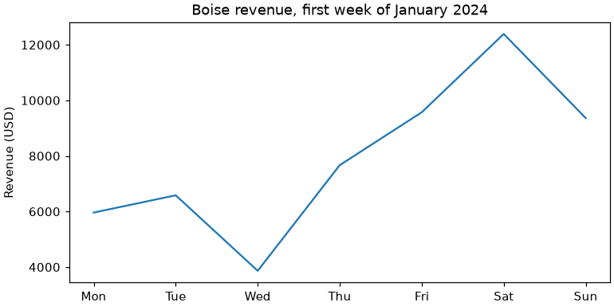
Read those five lines slowly, because every chart in this module is a variation on them.
plt.subplots()creates a Figure and one Axes and hands back both.figsize=(7, 3.5)is width and height in inches.layout="constrained"asks Matplotlib to arrange titles and labels so nothing overlaps or gets cut off; use it every time.ax.plot(days, week)draws on that Axes: x values first, y values second.ax.set_title()andax.set_ylabel()label it. A chart without labels is a puzzle.plt.show()displays the figure. A notebook shows figures by itself at the end of a cell, so there it is optional; in a script it is what opens the window.
fig and ax are ordinary Python objects. You can ask them about themselves.
print(type(fig).__name__, "and", type(ax).__name__)
print(fig.get_size_inches()) # width, height in inches
print(len(fig.axes), fig.axes[0] is ax) # the figure knows its axes
print(ax.get_title())
print(len(ax.lines)) # one line drawn so farOutput
Figure and Axes
[7. 3.5]
1 True
Boise revenue, first week of January 2024
1Two Ways to Write the Same Chart
Matplotlib has a second, older way of working that you will see in many tutorials and answers online. Instead of calling methods on ax, you call functions on plt, and Matplotlib applies them to whichever chart it considers "current".
plt.figure(figsize=(7, 3.5), layout="constrained")
plt.plot(days, week)
plt.title("Boise revenue, first week of January 2024")
plt.ylabel("Revenue (USD)")
plt.show()
plt.close() # tidy up: we do not need this duplicateIt draws exactly the same picture. The difference shows up later. With one chart, "the current chart" is obvious. With four charts on a figure, or a helper function that receives a chart to draw on, a hidden "current" target becomes a source of bugs: the title lands on the wrong panel and nothing tells you why. With the first style you always say which Axes you mean, because you are holding it in a variable.
| You will see (pyplot style) | This course writes (object-oriented style) |
|---|---|
plt.plot(x, y) | ax.plot(x, y) |
plt.title("...") | ax.set_title("...") |
plt.xlabel("..."), plt.ylabel("...") | ax.set_xlabel("..."), ax.set_ylabel("...") |
plt.xlim(a, b), plt.ylim(a, b) | ax.set_xlim(a, b), ax.set_ylim(a, b) |
plt.legend() | ax.legend() |
plt.savefig("f.png") | fig.savefig("f.png") |
✅ One Rule for the Whole Module
Use plt for exactly two jobs: creating figures (plt.subplots()) and showing them (plt.show()). Everything else is a method on ax or fig. This is called the object-oriented interface, it is what Matplotlib's own documentation recommends, and when you find a plt.something() example online, the table above is how you translate it.
📈 Line Charts: Change over Time
The question: how did store revenue change over the two years?
A line chart joins points in order, so it belongs wherever the x axis has an order that means something, and that almost always means time. Load the daily store data, with the date column parsed as real dates.
daily = pd.read_csv("data/daily_sales.csv", parse_dates=["date"])
boise = daily[daily["store"] == "Boise"]
print(boise[["date", "visitors", "revenue"]].head(3))
fig, ax = plt.subplots(figsize=(9, 3.5), layout="constrained")
ax.plot(boise["date"], boise["revenue"], linewidth=0.8)
ax.set_title("Boise: revenue per day")
ax.set_ylabel("Revenue (USD)")
plt.show()Output
date visitors revenue
2 2024-01-01 333 5962.00
6 2024-01-02 308 6583.13
10 2024-01-03 290 3866.59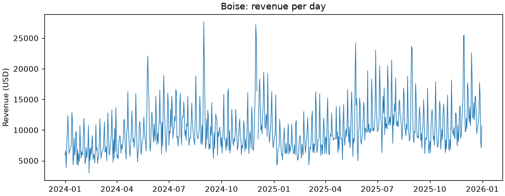
Because the dates are real datetime values, Matplotlib chose sensible date ticks by itself. But 727 points that swing every weekend are the wrong level of detail for a question about two years. This is where Module 2 pays off: most of the work of a good chart is done in pandas, before plotting. Total the revenue per month and per store, then draw that.
daily["month"] = daily["date"].dt.to_period("M").dt.to_timestamp() # first day of each month
monthly = daily.pivot_table(index="month", columns="store", values="revenue", aggfunc="sum")
print(monthly.head(3).round(0))Output
store Asheville Bend Boise Flagstaff
month
2024-01-01 154850.0 162534.0 227438.0 134690.0
2024-02-01 126216.0 151014.0 196327.0 128296.0
2024-03-01 162774.0 184033.0 253463.0 149609.0One row per month, one column per store. (.dt.to_period("M"), from Lessons 0.1 and 2.7, labels each date with its month; .dt.to_timestamp() turns that label back into a real date, the first day of the month, so Matplotlib can place it on a date axis.) Call ax.plot() once per column, and every call adds a line to the same Axes. The label you give each line is what ax.legend() shows.
fig, ax = plt.subplots(figsize=(9, 4), layout="constrained")
for store in monthly.columns:
ax.plot(monthly.index, monthly[store], marker="o", markersize=3, label=store)
ax.set_title("Monthly revenue by store")
ax.set_ylabel("Revenue (USD)")
ax.legend()
plt.show()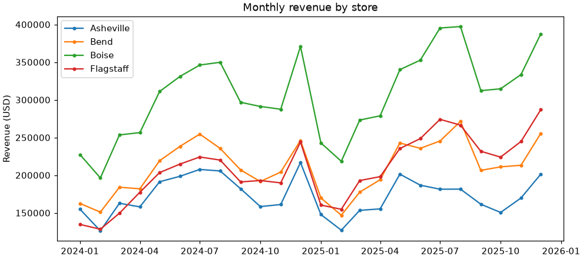
Matplotlib picked a different color for each line from its default color cycle. The arguments you will use most on a line:
| Argument | What it does | Examples |
|---|---|---|
color | Line color | "#667eea", "gray", "C1" (second color of the cycle) |
linewidth | Thickness in points | 0.8, 2.5 |
linestyle | Solid, dashed, dotted | "-", "--", ":" |
marker, markersize | A symbol at each data point | "o", "s", "^" |
label | The name shown in the legend | label="Boise" |
💡 Markers Say "These Are the Measurements"
A line by itself suggests a continuous quantity. With only 24 monthly values, small markers remind the reader that there are 24 real numbers here and the segments between them are just connectors. With 727 daily values, markers would be clutter: leave them off.
What a Line Does with Missing Days
Bend's sales export failed for three days in August 2024, so those days have no row at all. How a line chart treats a gap depends on whether the gap is absent rows or missing values.
bend = daily[daily["store"] == "Bend"].set_index("date")["revenue"]
aug = bend["2024-08-05":"2024-08-20"]
print(len(aug), "rows for 16 days")
aug_full = aug.asfreq("D") # one row for every calendar day; the missing ones become NaN
print(aug_full["2024-08-10":"2024-08-15"])
fig, ax = plt.subplots(figsize=(9, 3.2), layout="constrained")
ax.plot(aug.index, aug, linestyle="--", color="gray", label="Rows as stored (gap bridged)")
ax.plot(aug_full.index, aug_full, marker="o", color="#667eea", label="After asfreq('D') (gap shown)")
ax.set_title("Bend, August 2024: three days were never recorded")
ax.set_ylabel("Revenue (USD)")
ax.legend()
plt.show()Output
13 rows for 16 days
date
2024-08-10 10973.29
2024-08-11 5860.75
2024-08-12 NaN
2024-08-13 NaN
2024-08-14 NaN
2024-08-15 4749.56
Freq: D, Name: revenue, dtype: float64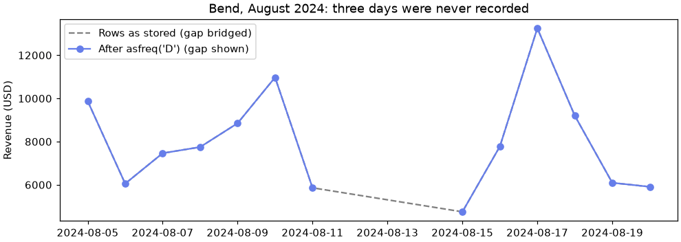
When rows are simply absent, Matplotlib joins the points on either side with a straight segment and the hole disappears. When the days exist but hold NaN, the line breaks. A reader should be able to see that data is missing, so for daily series, put the calendar back with asfreq (Lesson 2.7) before you plot.
🔵 Scatter Plots: Relationships
The question: when more people walk through the door, how much more does a store sell?
A scatter plot puts one dot per row at the position given by two numeric columns. Nothing is joined, because the rows have no order: you are looking at the shape of the whole cloud.
fig, ax = plt.subplots(figsize=(7, 4.5), layout="constrained")
ax.scatter(daily["visitors"], daily["revenue"])
ax.set_title("Visitors and revenue, every store-day")
ax.set_xlabel("Visitors")
ax.set_ylabel("Revenue (USD)")
plt.show()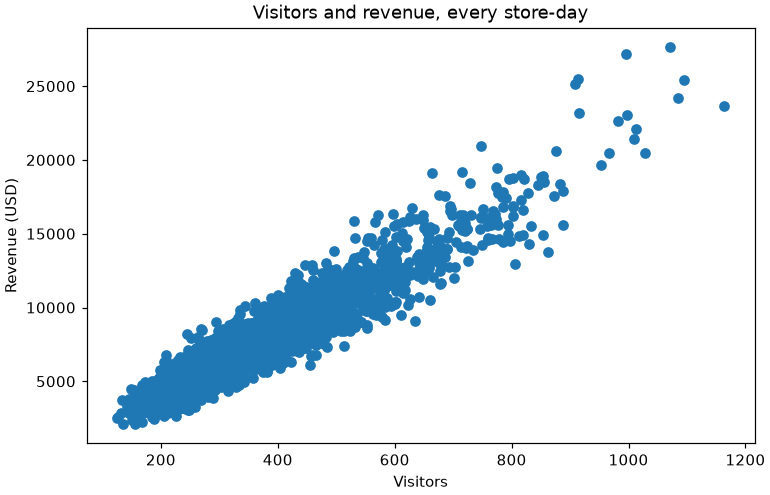
That blob has a name, overplotting, and two small arguments fix it: s makes the dots smaller and alpha makes them see-through (0 is invisible, 1 is solid), so dense regions look darker.
A scatter plot can also carry a third piece of information in the color of the dots. Pinecrest runs six sale weekends a year, marked by promo_day. Draw the regular days first and the promotion days on top, each with its own label.
promo = daily["promo_day"] == 1
print(promo.sum(), "promotion store-days out of", len(daily))
fig, ax = plt.subplots(figsize=(7, 4.5), layout="constrained")
ax.scatter(daily.loc[~promo, "visitors"], daily.loc[~promo, "revenue"],
s=8, alpha=0.3, color="#667eea", label="Regular day")
ax.scatter(daily.loc[promo, "visitors"], daily.loc[promo, "revenue"],
s=22, color="#d95f02", marker="^", label="Promotion day")
ax.set_title("More visitors, more revenue, and promotions bring both")
ax.set_xlabel("Visitors")
ax.set_ylabel("Revenue (USD)")
ax.legend()
plt.show()
per_visitor = daily["revenue"] / daily["visitors"]
print("Revenue per visitor, regular days: ", round(per_visitor[~promo].mean(), 2))
print("Revenue per visitor, promotion days:", round(per_visitor[promo].mean(), 2))Output
96 promotion store-days out of 2903
Revenue per visitor, regular days: 20.79
Revenue per visitor, promotion days: 23.12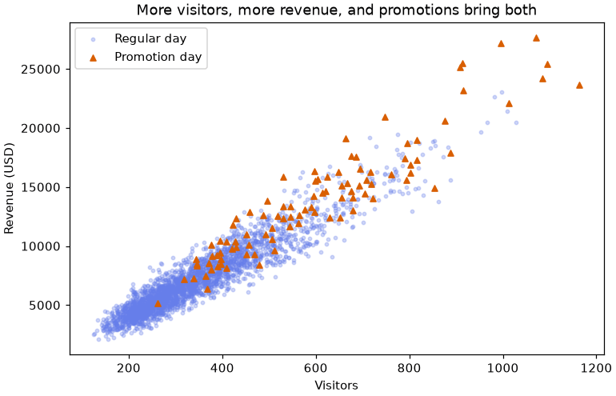
Three things are worth reading off this chart. The cloud is a fairly tight, straight band, so revenue rises steadily with visitors. Promotion days sit far along the band and only a little above it. The two printed numbers confirm what the eye suspects: sale weekends work mainly by bringing more people in, and each visitor also spends a little more (about $23 against $21). (Checking a visual impression with a quick calculation is a habit worth keeping.) And the triangles differ from the dots in shape as well as color, so the chart still works for a reader who cannot tell orange from blue, or who prints it in gray.
⚠️ A Pattern Is Not a Cause
A scatter plot shows that two columns move together. It cannot say why. Here the story is easy to believe, but the same data holds a trap: staffing and revenue also rise together, and the reason is not what it seems. Lesson 4.4 takes that one apart. For now, describe what a scatter shows ("days with more visitors have more revenue") and hold back on "because".
📊 Bar Charts: Comparing Categories
The question: which store sold the most in 2025?
A bar chart compares one number across separate groups. The length of each bar is the number, which is the easiest comparison there is for the human eye. The pattern is always the same: aggregate with pandas to one number per group, then hand the group names and the numbers to ax.bar().
in_2025 = daily[daily["date"].dt.year == 2025]
by_store = in_2025.groupby("store")["revenue"].sum().sort_values(ascending=False)
print(by_store.round(0))
fig, ax = plt.subplots(figsize=(7, 3.8), layout="constrained")
bars = ax.bar(by_store.index, by_store.values, color="#667eea")
ax.bar_label(bars, fmt="${:,.0f}")
ax.set_title("Store revenue in 2025")
ax.set_ylabel("Revenue (USD)")
plt.show()Output
store
Boise 3846406.0
Flagstaff 2717997.0
Bend 2569350.0
Asheville 2017699.0
Name: revenue, dtype: float64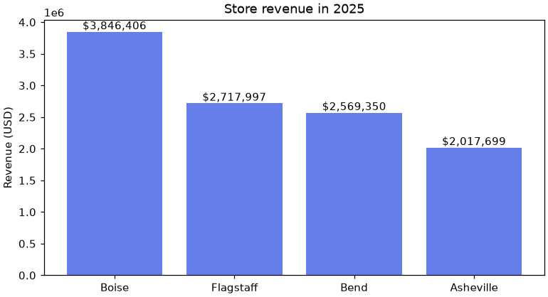
Two choices made that chart easier to read. Sorting the groups by value (when they have no natural order of their own) turns the chart into a ranking. And ax.bar_label() writes each value on its bar, so nobody has to squint across to the axis. The y axis shows 1e6 in its corner, meaning "times one million"; Lesson 3.3 replaces that with proper dollar labels.
Horizontal Bars for Long Names
When there are many groups or their names are long, turn the chart on its side with ax.barh(). The names then read left to right and never collide. How many products does Pinecrest carry in each category?
products = pd.read_csv("data/products.csv")
per_category = products["category"].value_counts().sort_values() # smallest first
print(per_category.tail(3))
fig, ax = plt.subplots(figsize=(7, 3.8), layout="constrained")
bars = ax.barh(per_category.index, per_category.values, color="#667eea")
ax.bar_label(bars, padding=3)
ax.set_title("Products in the catalog, by category")
ax.set_xlabel("Number of products")
plt.show()Output
category
Camp Kitchen 29
Accessories 32
Apparel 35
Name: count, dtype: int64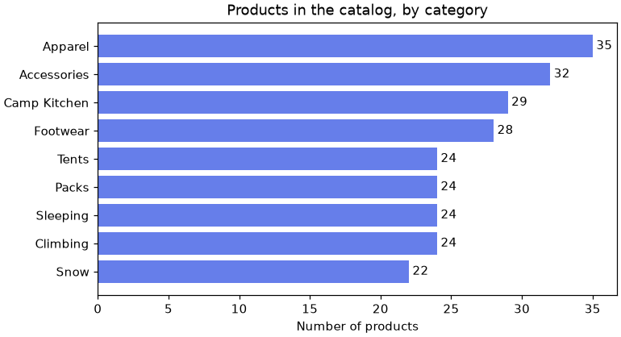
barh draws the first row at the bottom, so sorting smallest-first puts the largest bar on top.Points with a Range: ax.errorbar()
A bar shows one number per group. Often you also want to show how much the values behind that number vary. ax.errorbar() draws a point for each group with a vertical bar through it whose half-length you supply as yerr. Here the point is each store's mean daily revenue and the bar reaches one standard deviation above and below it (the standard deviation measures how much days differ from the mean; Lesson 4.1 explains it properly).
spread = daily.groupby("store")["revenue"].agg(["mean", "std"]).round(0)
print(spread)
fig, ax = plt.subplots(figsize=(7, 3.6), layout="constrained")
ax.errorbar(spread.index, spread["mean"], yerr=spread["std"], fmt="o", capsize=5, color="#667eea")
ax.set_title("Daily revenue by store: mean, and one standard deviation either side")
ax.set_ylabel("Revenue per day (USD)")
ax.set_ylim(bottom=0)
plt.show()Output
mean std
store
Asheville 5704.0 2064.0
Bend 6998.0 2546.0
Boise 10144.0 3715.0
Flagstaff 6890.0 2686.0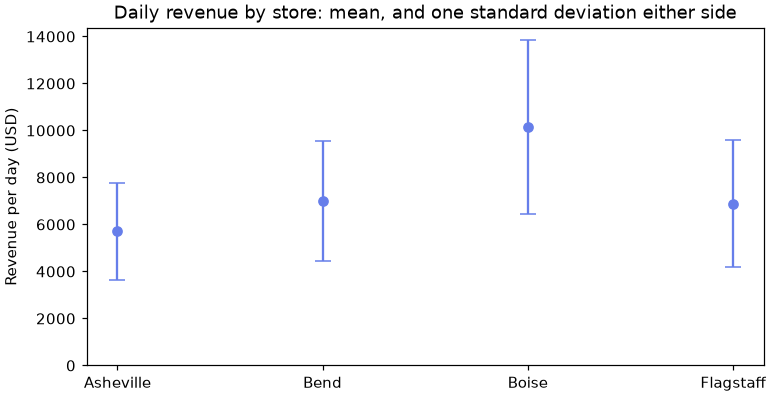
fmt="o" draws a marker with no connecting line (the stores have no order), and capsize adds the small end caps. The bars can stand for different things (a standard deviation, a minimum and maximum, a confidence interval in Module 4), so always say in the title or caption which one you drew.
⚠️ Bars Start at Zero
Because a bar's length is the value, a bar chart whose axis starts at 2,000,000 instead of 0 would make Boise look five times the size of Asheville when it is not even double. Matplotlib starts bar axes at zero by default. Leave it that way. If the differences you care about are small compared with the totals, plot the differences, or use a line or dots, where position rather than length carries the value.
🏔️ Histograms: Distributions
The question: what does a typical Pinecrest order cost, and how much do orders vary?
A histogram looks like a bar chart, but it answers a different question. You give it one numeric column with many rows. It cuts the range of values into equal intervals called bins, counts the rows that fall in each, and draws the counts. There is no groupby first: the histogram does the counting.
orders = pd.read_csv("data/orders.csv", parse_dates=["order_date"])
totals = orders["order_total"]
fig, ax = plt.subplots(figsize=(8, 3.2), layout="constrained")
ax.hist(totals, bins=40, color="#667eea")
ax.set_title("Order totals, all 20,302 orders")
ax.set_xlabel("Order total (USD)")
ax.set_ylabel("Number of orders")
plt.show()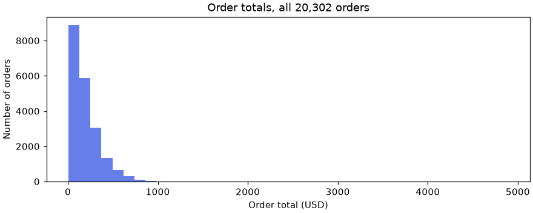
The chart is not broken. It is telling you something true: a handful of very large orders (bulk purchases like the $4,893 order you met in Lesson 0.1) stretch the range, so each of the 40 bins is more than $120 wide and nearly every order lands in the first few. To see the shape where the orders actually are, give the histogram a range, and say on the chart what you left out.
above = (totals > 1000).sum()
print(above, "orders above $1,000:", round(above / len(totals) * 100, 2), "percent")
fig, ax = plt.subplots(figsize=(8, 3.8), layout="constrained")
counts, edges, patches = ax.hist(totals, bins=40, range=(0, 1000), color="#667eea", edgecolor="white")
ax.axvline(totals.median(), color="black", linestyle="--", label=f"Median ${totals.median():.2f}")
ax.axvline(totals.mean(), color="#d95f02", linestyle=":", linewidth=2, label=f"Mean ${totals.mean():.2f}")
ax.set_title(f"Order totals up to $1,000 ({above} larger orders not shown)")
ax.set_xlabel("Order total (USD)")
ax.set_ylabel("Number of orders")
ax.legend()
plt.show()
print(edges[:4]) # where the first bins start and end
print(counts[:3]) # how many orders fell in eachOutput
37 orders above $1,000: 0.18 percent
[ 0. 25. 50. 75.]
[ 877. 1843. 2009.]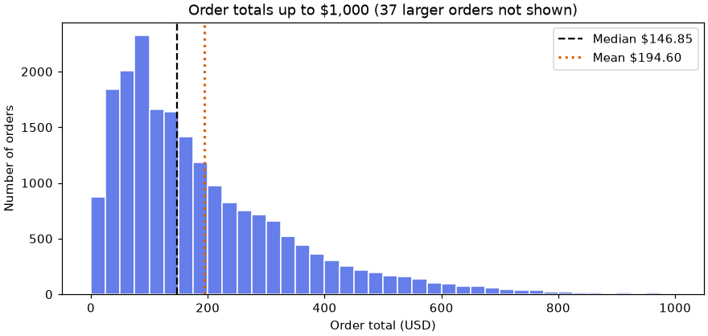
Now each bin is $25 wide and the shape is clear: most orders are between about $25 and $200, and a long tail stretches right. ax.axvline() draws a vertical line at an x value, here the median and the mean. They are almost $50 apart, and you can see why: the tail drags the mean toward it. Lesson 4.1 is about exactly that difference.
ax.hist() also returns what it computed: the count in each bin, and the bin edges (41 edges for 40 bins).
💡 The Number of Bins Is Your Decision
Too few bins and the shape is a few fat blocks; too many and it is a comb of noise. There is no single right answer. Try a few values (20, 40, 80) and keep the one where the overall shape is clear. If the story changes completely when you change the bins, the story was not really in the data.
🧭 Choosing a Chart
You have now drawn the four charts that cover most everyday analysis. Here they are side by side, organized by the question each one answers.
| Your question | Chart | Method | What you pass | Prepare with |
|---|---|---|---|---|
| How did it change over time? | Line | ax.plot | Dates in order, one value each | resample or groupby a period |
| Do two numbers move together? | Scatter | ax.scatter | Two numeric columns, one dot per row | Usually nothing: plot the rows |
| Which group is bigger? | Bar (or points with ax.errorbar to show spread) | ax.bar, ax.barh | One number per category | groupby or value_counts, then sort |
| What values are typical? How spread out? | Histogram | ax.hist | One numeric column, many rows | Nothing: it counts for you |
The classic mix-ups all come from ignoring the question:
- A line across categories. Joining Asheville to Bend to Boise with a line suggests something flows from one store to the next. Nothing does. Unordered groups get bars.
- Bars for a long time series. Twenty-four monthly bars are fine. Seven hundred daily bars are a fence. Long ordered series get a line.
- A bar chart when you wanted a histogram. A bar chart needs one number per group that you computed. A histogram takes raw rows and does the counting. Feeding raw rows to
ax.bar()is in Common Mistakes.
✅ Say the Question Out Loud
If you cannot finish the sentence "This chart shows whether..." you are not ready to choose a chart yet, and that is fine: go back to the data and look around some more. Choosing the wrong chart the first time is normal, and redrawing costs two lines of code.
🐼 Plotting Straight from a DataFrame
In Lesson 0.1 you wrote monthly.plot.bar(ax=ax) without being told what it was. Now you can see it for what it is: a shortcut. Every Series and DataFrame has a .plot accessor that calls Matplotlib for you, using the index as x, each column as a series, and the column names as legend labels.
fig, ax = plt.subplots(figsize=(9, 4), layout="constrained")
returned = monthly.plot(ax=ax, marker="o", markersize=3)
ax.set_title("Monthly revenue by store")
ax.set_xlabel("")
ax.set_ylabel("Revenue (USD)")
plt.show()
print(returned is ax)
print(len(ax.lines), "lines:", [line.get_label() for line in ax.lines])Output
True
4 lines: ['Asheville', 'Bend', 'Boise', 'Flagstaff']That one .plot() call replaced the for loop and ax.legend() from earlier and drew the same four-line chart. Passing ax=ax tells pandas to draw on your Axes, and the method returns that same Axes, so everything you know still applies afterward: ax.set_title(), ax.set_ylabel(), and anything from the rest of this module.
| pandas shortcut | Draws with | Typical use |
|---|---|---|
df.plot(ax=ax) or df.plot.line(ax=ax) | ax.plot | One line per column against the index |
df.plot.scatter(x="a", y="b", ax=ax) | ax.scatter | Two named columns |
s.plot.bar(ax=ax), s.plot.barh(ax=ax) | ax.bar, ax.barh | The result of a groupby or value_counts |
s.plot.hist(bins=40, ax=ax) | ax.hist | One numeric column |
The shortcut is at its best for grouped bars, which take some arithmetic to position by hand. Compare each store's revenue in 2024 and 2025: a DataFrame with stores as rows and years as columns becomes one cluster of bars per row.
daily["year"] = daily["date"].dt.year
yearly = daily.pivot_table(index="store", columns="year", values="revenue", aggfunc="sum")
print(yearly.round(0))
fig, ax = plt.subplots(figsize=(7, 3.8), layout="constrained")
yearly.plot.bar(ax=ax, rot=0, color=["#b8c1f5", "#667eea"])
ax.set_title("Store revenue, 2024 and 2025")
ax.set_xlabel("")
ax.set_ylabel("Revenue (USD)")
plt.show()Output
year 2024 2025
store
Asheville 2123278.0 2017699.0
Bend 2476118.0 2569350.0
Boise 3518292.0 3846406.0
Flagstaff 2270180.0 2717997.0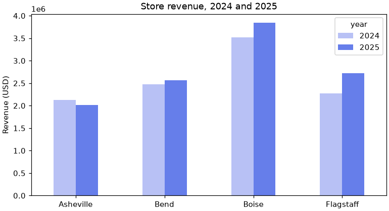
rot=0 keeps the store names horizontal (pandas rotates bar labels 90 degrees by default). A lighter and a darker shade of one color say "same measure, earlier and later" better than two unrelated colors would.
💡 Which Should I Use?
Use df.plot(ax=ax) when your data is already in the right shape and you want a quick, correct chart. Use the ax methods directly when you need control: different styling per line, layers of several kinds, annotations. They mix freely on the same Axes, so it is never a commitment. Always create the figure yourself and pass ax=ax; then you hold both objects and the rest of this module works the same either way.
⚠️ Common Mistakes
Plotting has two kinds of mistake. Some raise an error, which is the helpful kind. The others draw a perfectly good-looking chart of the wrong thing. Both are normal on the way to a correct chart, and both are easier to spot once you have seen them.
1. x and y Are Different Lengths
fig, ax = plt.subplots()
ax.plot(days, week[:6])Error
ValueError: x and y must have same first dimension, but have shapes (7,) and (6,)What it means: seven x values, six y values, so Matplotlib cannot pair them up. This usually happens when x and y came from two different filters. Fix: take both from the same DataFrame (boise["date"] and boise["revenue"]), and print len() of each when in doubt.
2. Mixing Up the Two Styles
ax.title("Boise revenue")Error
TypeError: 'Text' object is not callableWhat it means: plt.title(...) is a function, but ax.title is the title object itself, and you cannot call it. Fix: on an Axes the methods start with set_: ax.set_title(), ax.set_xlabel(), ax.set_ylim(). The translation table in Figure and Axes covers the common ones.
3. Passing a Column to color
ax.scatter(daily["visitors"], daily["revenue"], color=daily["store"])Error
ValueError: 'color' kwarg must be a color or sequence of color specs. For a sequence of values to be color-mapped, use the 'c' argument instead.What it means: color wants actual colors, and "Boise" is not one. Fix: to color by a category, call ax.scatter() once per group with its own color and label, as you did for promotion days. To color by a number, pass the column as c= (Exercise 3 does this).
4. Bars from Rows That Were Never Aggregated
fig, ax = plt.subplots(figsize=(6, 3), layout="constrained")
bars = ax.bar(daily["store"], daily["revenue"])
print(len(bars), "bars drawn")
print(daily.groupby("store")["revenue"].max())
plt.close(fig)Output (a chart appears, and it is wrong)
2903 bars drawn
store
Asheville 16558.00
Bend 20935.21
Boise 27677.10
Flagstaff 18690.57
Name: revenue, dtype: float64What happened: no error, and a tidy chart with four bars of around $20,000. But Matplotlib drew 2,903 bars, one per row, stacked on top of each other at four x positions. All you can see is the tallest in each pile: each store's single best day. It looks like an answer and it is not the total, the mean, or anything you meant. Fix: ax.bar() never aggregates. Do the groupby first, and check that you are passing one number per bar.
5. Dates That Are Still Text
raw = pd.read_csv("data/daily_sales.csv") # no parse_dates
raw_boise = raw[raw["store"] == "Boise"]
print(raw_boise["date"].dtype)
fig, ax = plt.subplots(figsize=(6, 3), layout="constrained")
ax.plot(raw_boise["date"], raw_boise["revenue"])
print(len(ax.get_xticks()), "tick labels on the x axis")
plt.close(fig)Output (a chart appears, with a black smear for an x axis)
str
727 tick labels on the x axisWhat happened: to Matplotlib, text values are categories, like store names. It gave each of the 727 date strings its own tick and label, which print on top of each other as a solid black band, and the drawing is slow. Fix: parse_dates=["date"] when loading, or pd.to_datetime() afterward. With real dates you get a handful of well-chosen ticks. The same thing happens to numbers stored as text: check .dtype before you plot.
🛠️ Project: Does Rain Keep Shoppers Away?
Pinecrest's store managers believe that rainy days are slow days. You have door-counter data for every store and a weather file for every store city, so you can check. You will answer one question with all four chart types, each showing a different side of it, and finish with a one-sentence finding. Work in a new notebook called lesson_3_1_project. Allow about 35 minutes.
🛠️ Step 1: Load and merge (6 min)
The two files share a date, but the store column is called store in one and city in the other. Merge them, then add a True/False column rainy for days with at least 0.10 inches of precipitation.
import matplotlib.pyplot as plt
import pandas as pd
daily = pd.read_csv("data/daily_sales.csv", parse_dates=["date"])
weather = pd.read_csv("data/store_weather.csv", parse_dates=["date"])
traffic = daily.merge(weather, left_on=["date", "store"], right_on=["date", "city"],
how="inner", validate="one_to_one")
traffic["rainy"] = traffic["precip_in"] >= 0.10
print(traffic.shape)
print(traffic[["date", "store", "visitors", "high_f", "precip_in", "rainy"]].head(4))
print("Share of store-days that were rainy:", round(traffic["rainy"].mean(), 3))Output
(2903, 13)
date store visitors high_f precip_in rainy
0 2024-01-01 Asheville 201 49 0.00 False
1 2024-01-01 Bend 200 37 0.00 False
2 2024-01-01 Boise 333 37 0.00 False
3 2024-01-01 Flagstaff 144 38 1.35 True
Share of store-days that were rainy: 0.134All 2,903 store-days found their weather. About one day in seven was rainy.
🛠️ Step 2: A line, with the rainy days marked (7 min)
Question: in one month at one store, do the rainy days look different? Asheville is the rainiest city, so look there. Draw the daily visitors for June 2025 as a line, then lay a scatter of only the rainy days on top. Two layers on one Axes is just two method calls.
june = traffic[(traffic["store"] == "Asheville")
& (traffic["date"] >= "2025-06-01") & (traffic["date"] <= "2025-06-30")]
wet = june[june["rainy"]]
print(len(june), "days,", len(wet), "of them rainy")
fig, ax = plt.subplots(figsize=(9, 3.8), layout="constrained")
ax.plot(june["date"].dt.day, june["visitors"], color="gray", linewidth=1.2, label="Visitors")
ax.scatter(wet["date"].dt.day, wet["visitors"], color="#0072b2", s=45, zorder=3, label="Rainy day")
ax.set_title("Asheville, June 2025: daily visitors")
ax.set_xlabel("Day of the month")
ax.set_ylabel("Visitors")
ax.legend()
plt.show()Output
30 days, 10 of them rainy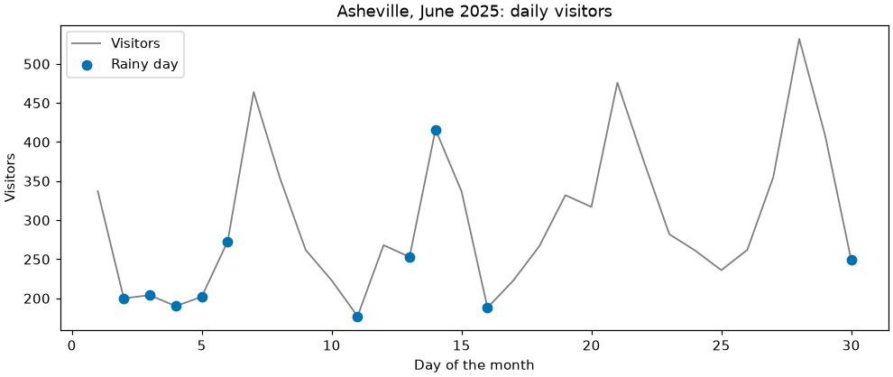
zorder=3 draws the dots above the line instead of behind it. Using the day number (.dt.day) for x keeps the axis labels short for a single month.
🛠️ Step 3: A scatter of rain against visitors (6 min)
Question: across all of Asheville's days, do wetter days have fewer visitors?
ash = traffic[traffic["store"] == "Asheville"]
fig, ax = plt.subplots(figsize=(7, 4), layout="constrained")
ax.scatter(ash["precip_in"], ash["visitors"], s=10, alpha=0.4, color="#667eea")
ax.set_title("Asheville: rainfall and visitors, each day")
ax.set_xlabel("Precipitation (inches)")
ax.set_ylabel("Visitors")
plt.show()
print((ash["precip_in"] == 0).mean().round(2), "of Asheville days had no precipitation at all")Output
0.64 of Asheville days had no precipitation at all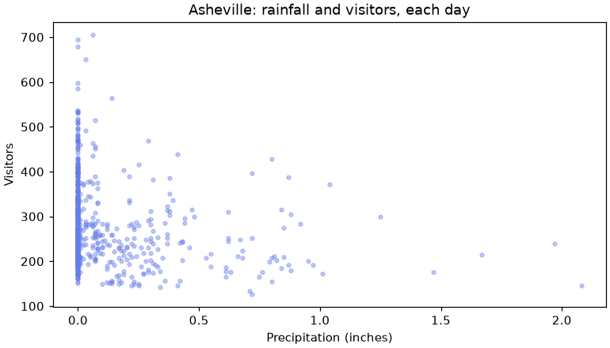
This is worth noticing. The scatter is not wrong, but because most days have no rain at all, the real comparison is between two groups of days: dry and rainy. That is a job for the other two chart types.
🛠️ Step 4: Two histograms on one Axes (7 min)
Question: how do the distributions of visitors compare on dry and rainy days? Draw both histograms on the same Axes with the same bins. There are far more dry days than rainy ones, so raw counts would not be comparable: density=True rescales each histogram so its bars cover a total area of 1, which lets you compare shapes.
dry_v = ash.loc[~ash["rainy"], "visitors"]
wet_v = ash.loc[ash["rainy"], "visitors"]
print(len(dry_v), "dry days, median", dry_v.median(), "visitors")
print(len(wet_v), "rainy days, median", wet_v.median(), "visitors")
fig, ax = plt.subplots(figsize=(8, 3.8), layout="constrained")
ax.hist(dry_v, bins=25, range=(100, 700), density=True, alpha=0.6, color="#e69f00", label="Dry days")
ax.hist(wet_v, bins=25, range=(100, 700), density=True, alpha=0.6, color="#0072b2", label="Rainy days")
ax.set_title("Asheville: rainy days are shifted toward fewer visitors")
ax.set_xlabel("Visitors per day")
ax.set_ylabel("Share of days (density)")
ax.legend()
plt.show()Output
555 dry days, median 262.0 visitors
172 rainy days, median 228.0 visitors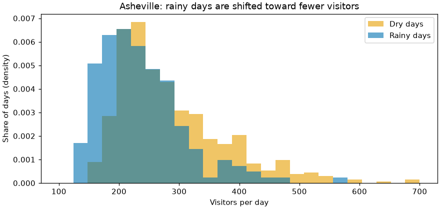
🛠️ Step 5: Bars for every store (6 min)
Question: is it only Asheville, or every store? Aggregate to mean visitors per store for dry and rainy days, draw grouped bars straight from the DataFrame, then compute the percentage drop.
means = traffic.pivot_table(index="store", columns="rainy", values="visitors", aggfunc="mean")
means.columns = ["Dry days", "Rainy days"]
means["Change %"] = (means["Rainy days"] / means["Dry days"] - 1) * 100
print(means.round(1))
fig, ax = plt.subplots(figsize=(7, 3.8), layout="constrained")
means[["Dry days", "Rainy days"]].plot.bar(ax=ax, rot=0, color=["#e69f00", "#0072b2"])
ax.set_title("Mean daily visitors, dry and rainy days")
ax.set_xlabel("")
ax.set_ylabel("Visitors per day")
plt.show()Output
Dry days Rainy days Change %
store
Asheville 286.8 236.4 -17.6
Bend 339.5 272.7 -19.7
Boise 497.4 366.7 -26.3
Flagstaff 338.3 266.3 -21.3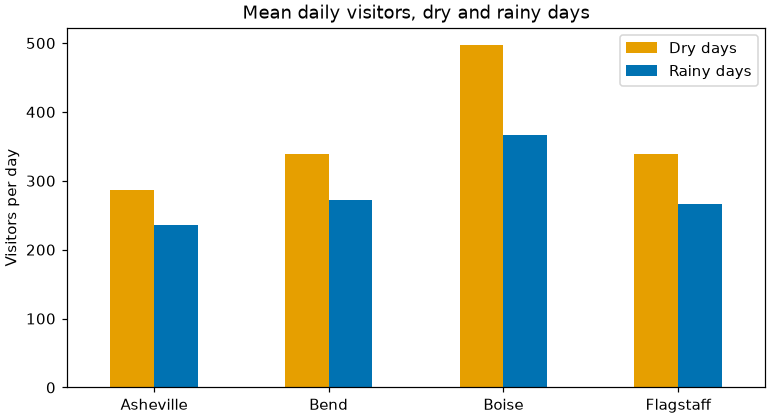
🛠️ Step 6: Write the finding (3 min)
A chart without a sentence is half an answer. Write one or two sentences in a notebook text cell, using your own numbers from Step 5. For example:
"On days with at least 0.10 inches of precipitation, Pinecrest stores see between 18% and 26% fewer visitors than on dry days, and the drop appears at all four stores. This compares simple averages; it does not yet account for the season or the day of the week."
The second sentence matters as much as the first. Saying what your chart does not show is part of reading it honestly, and Module 4 gives you the tools to test the claim properly.
✅ Project Completion Checklist
traffichas 2,903 rows and a True/Falserainycolumn- Every chart was created with
fig, ax = plt.subplots(...)and drawn with methods onax - Every chart has a title and labeled axes with units
- The line chart has a second layer marking the rainy days
- The two histograms share the same
binsandrangeand usedensity=True - Your bar chart shows a rainy-day drop at all four stores, and your table gives the percentage for each
- You wrote a finding that includes one thing the charts do not prove
🏋️ Hands-on Exercises
Each exercise starts with a question. Decide which chart answers it before you open the hint. The solutions continue from the variables you made in the lesson (daily, monthly, orders, traffic).
🏋️ Exercise 1: One Store's Two Years
How did Flagstaff's monthly revenue change over 2024 and 2025? Draw it from the monthly table with markers, a title and a labeled y axis. Then print the revenue of the first and last month.
💡 Hint
Change over time is a line. monthly["Flagstaff"] is a Series whose index is the month; .iloc[0] and .iloc[-1] give its first and last values.
✅ Solution
flag = monthly["Flagstaff"]
fig, ax = plt.subplots(figsize=(8, 3.5), layout="constrained")
ax.plot(flag.index, flag, marker="o", color="#667eea")
ax.set_title("Flagstaff: monthly revenue")
ax.set_ylabel("Revenue (USD)")
plt.show()
print(f"January 2024: ${flag.iloc[0]:,.0f} December 2025: ${flag.iloc[-1]:,.0f}")Output
January 2024: $134,690 December 2025: $286,876The line climbs through both years, with the same summer and December peaks as the other stores. December 2025 is more than double January 2024.
🏋️ Exercise 2: Which Day of the Week Is Busiest?
Using orders, count the orders placed on each day of the week and draw the counts. Think about the order of the bars: should they be sorted by value this time?
💡 Hint
orders["order_date"].dt.day_name() gives the weekday name. value_counts() sorts by count, but weekdays have a natural order that readers expect. .reindex(list_of_names) puts a Series in the order you ask for.
✅ Solution
week_order = ["Monday", "Tuesday", "Wednesday", "Thursday", "Friday", "Saturday", "Sunday"]
per_weekday = orders["order_date"].dt.day_name().value_counts().reindex(week_order)
print(per_weekday)
fig, ax = plt.subplots(figsize=(8, 3.5), layout="constrained")
bars = ax.bar(per_weekday.index, per_weekday.values, color="#667eea")
ax.bar_label(bars)
ax.set_title("Orders by day of the week, 2024 and 2025")
ax.set_ylabel("Number of orders")
plt.show()Output
order_date
Monday 2897
Tuesday 2712
Wednesday 2666
Thursday 2640
Friday 2775
Saturday 3276
Sunday 3336
Name: count, dtype: int64Saturday and Sunday lead. The bars stay in calendar order because that is how people think about a week: sort by value only when the categories have no order of their own.
🏋️ Exercise 3: Temperature and Revenue
Do Boise's warmer days bring in more revenue? Draw the daily high temperature against revenue for Boise from traffic. Then color each dot by the month of the year by passing a numeric column as c= with cmap="viridis", and add a color scale with fig.colorbar(). What do the December days do to the pattern?
💡 Hint
Two numbers, one dot per day: a scatter. ax.scatter() returns an object; pass it to fig.colorbar(that_object, ax=ax, label="Month"). The month number is .dt.month.
✅ Solution
boise_t = traffic[traffic["store"] == "Boise"]
fig, ax = plt.subplots(figsize=(7.5, 4.2), layout="constrained")
dots = ax.scatter(boise_t["high_f"], boise_t["revenue"], c=boise_t["date"].dt.month,
cmap="viridis", s=14)
fig.colorbar(dots, ax=ax, label="Month (1 = January)")
ax.set_title("Boise: daily high temperature and revenue")
ax.set_xlabel("High temperature (°F)")
ax.set_ylabel("Revenue (USD)")
plt.show()
print("Correlation:", round(boise_t["high_f"].corr(boise_t["revenue"]), 2))Output
Correlation: 0.29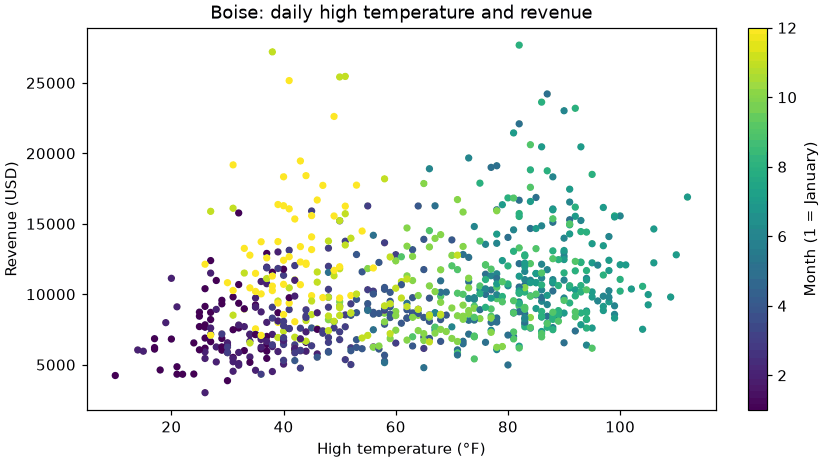
The cloud drifts upward to the right, yet a group of cold days sits high: the December holiday season. A colormap turns numbers into colors: viridis runs from dark purple (January) through green to yellow (December), and the color bar is its legend. The weak correlation number hides a relationship that is real but seasonal, and you would not know that without looking at the picture.
🏋️ Exercise 4: Online and In-Store Orders (Stretch)
Do online orders and store orders have the same distribution of order totals? Draw both histograms on one Axes for totals up to $600, with the same bins. Use density=True (why?) and histtype="step", which draws outlines instead of filled bars so neither hides the other. Print each channel's median.
💡 Hint
Filter orders by channel to get two Series of order_total. Give both ax.hist() calls identical bins and range. There are 12,854 online orders and 7,448 store orders.
✅ Solution
online = orders.loc[orders["channel"] == "online", "order_total"]
store = orders.loc[orders["channel"] == "store", "order_total"]
print(f"online: {len(online):,} orders, median ${online.median():.2f}")
print(f"store : {len(store):,} orders, median ${store.median():.2f}")
fig, ax = plt.subplots(figsize=(8, 3.8), layout="constrained")
ax.hist(online, bins=30, range=(0, 600), density=True, histtype="step", linewidth=2,
color="#0072b2", label="Online")
ax.hist(store, bins=30, range=(0, 600), density=True, histtype="step", linewidth=2,
color="#d55e00", linestyle="--", label="Store")
ax.set_title("Order totals by channel (orders up to $600)")
ax.set_xlabel("Order total (USD)")
ax.set_ylabel("Share of orders (density)")
ax.legend()
plt.show()Output
online: 12,854 orders, median $156.40
store : 7,448 orders, median $133.90density=True is needed because the two groups are different sizes: with raw counts the online outline would tower over the store one even if the shapes were identical. Describe in your journal what you see: are the two shapes nearly the same, or is one shifted?
🎯 Quick Quiz
🎯 Check Your Understanding
Question 1: You want to know what a typical order total is and how much the 20,302 order totals vary. Which chart answers that?
Question 2: What does this print?
fig_q, ax_q = plt.subplots()
ax_q.plot([1, 2, 3], [2, 4, 1])
ax_q.plot([1, 2, 3], [1, 1, 3])
print(len(fig_q.axes), len(ax_q.lines))
plt.close(fig_q)Question 3: ax.bar(daily["store"], daily["revenue"]) runs without an error and shows four bars. What does the visible height of each bar represent?
Question 4: Which statement about a Figure and an Axes is correct?
Question 5: A store's daily revenue has no rows at all for three days in the middle of a month. You plot ax.plot(df["date"], df["revenue"]). What does the reader see for those three days?
❓ Common Questions at This Stage
Every example online uses plt.plot(). Is the ax style really necessary?
For one quick chart, both work and you will not be marked down by Python for either. The ax style earns its keep the moment a figure has more than one chart, or you write a function that draws on a chart it is given, both of which start in the next lesson. Learning one style that always works is easier than learning when the shortcut stops working. Read pyplot-style code freely; write the ax style.
My notebook prints something like [<matplotlib.lines.Line2D object at 0x...>] above the chart. What is that?
It is the return value of the last line in the cell. ax.plot() returns a list of the line objects it created, and a notebook displays the value of a cell's last expression. It is harmless. End the cell with plt.show(), as this lesson does, and it goes away.
I ran my script and no chart appeared.
A script needs plt.show() to open a window, and it pauses there until you close the window. If you are on a machine with no display (a server, some remote setups), there is no window to open: save the figure to a file with fig.savefig("chart.png") instead. Lesson 3.4 covers saving properly.
Why is there no pie chart in this lesson?
Matplotlib has ax.pie(), and it runs fine. But people judge lengths much more accurately than angles or areas, so the same numbers as sorted bars are almost always easier to read, especially with more than two or three slices. When you are tempted by a pie, draw the bar chart first and see whether you still want the pie.
How big should figsize be?
For a notebook or a web page, a width of 7 to 9 inches and a height of 3.5 to 4.5 is a comfortable default for a single chart. Wide and short suits time series; closer to square suits scatter plots. The numbers are inches, and how they turn into pixels is the subject of Lesson 3.4.
🌟 Going Further: Bonus Challenge
Deliberately answer one question with all four chart types and judge the results. Take "how does revenue differ between the four stores in 2025?" and draw: (1) a bar chart of total revenue, (2) a line chart with the four store names on the x axis, (3) four overlaid histograms of daily revenue, one per store, and (4) a scatter of visitors against revenue with one color per store. Which charts answer the question as asked? Which answer a different, perhaps more interesting, question? Write a sentence about each in your journal. Then look up ax.boxplot() in the Matplotlib documentation and try it on the same four groups of daily revenue: Lesson 4.2 explains how to read it.
📓 Learning Journal
Take five minutes to write in your learning journal (the journal.md file you started in Lesson 0.1, or a paper notebook). Jot down:
- Key concepts you learned today
- Techniques that clicked (and the ones that have not, yet)
- Questions or confusion to come back to
- Ideas to try on your own
- Progress and feelings: how did this lesson go for you?
✍️ This lesson's prompt: Write down three questions you would like to ask of the Pinecrest data, one each beginning "How did ... change", "Is ... related to ..." and "Which ... has the most ...". Next to each, name the chart you would draw and the pandas step that would prepare the data for it. Then describe, in your own words, the difference between a Figure and an Axes.
📝 Lesson Summary
🎓 Key Takeaways
- A chart answers a question; decide the question first and the chart type follows
- A Figure is the whole canvas; an Axes is one chart on it. Create both with
fig, ax = plt.subplots(figsize=..., layout="constrained")and draw with methods onax - Line (
ax.plot) for change over time; scatter (ax.scatter) for the relationship between two numbers; bar (ax.bar,ax.barh) for comparing groups; histogram (ax.hist) for the distribution of one column - Most of a chart is made in pandas first: aggregate to the level the question needs, then plot
ax.bar()never aggregates andax.hist()always does: one number per bar for the first, raw rows for the secondalphaand a smallsfix overplotting;rangeandbinscontrol what a histogram shows- Absent rows are bridged by a line;
NaNvalues break it. Show gaps honestly df.plot(ax=ax)is a shortcut to the same Matplotlib calls and returns the same Axes- A chart that draws without error can still be wrong: check dtypes, lengths and whether you aggregated
🏆 What You've Accomplished
- You drew line, scatter, bar and histogram charts from real tables, each for a stated question
- You found Pinecrest's seasons, its fastest-growing store and its one shrinking store by looking
- You fixed an unreadable scatter and an unreadable histogram instead of accepting the defaults
- You answered a manager's question about rain with four charts and an honest sentence
- You can now read pyplot-style code from anywhere and rewrite it in the object-oriented style
🔭 Looking Ahead
In Lesson 3.2: Subplots and Composition one Figure will hold several Axes. You will put the four stores side by side on a shared scale, build a small dashboard with a named layout, and learn when a second y axis helps and when it misleads. Holding ax in a variable, as you practiced today, is what makes that easy.
📋 Before the Next Lesson
- Keep your notebook: Lesson 3.2 uses the
dailyandmonthlytables again. - Find one pyplot-style example (
plt.plot,plt.title...) in a tutorial or the Matplotlib gallery and rewrite it withfig, ax = plt.subplots(). - Look at a chart in today's news or in a report at work and ask: what question is it answering, and is it the right chart type for that question?
🌱 Encouragement for the Journey
Something changed in this lesson: your analysis became visible. The groupbys and pivots you worked hard on in Module 2 now turn into pictures that someone else can understand in seconds, and you made several of them today from real questions. If your first attempts looked crowded or plain, good. So did the first versions on this page, on purpose. Noticing that a chart is not working yet, and knowing which two arguments to change, is the skill. The polish comes in Lesson 3.3.